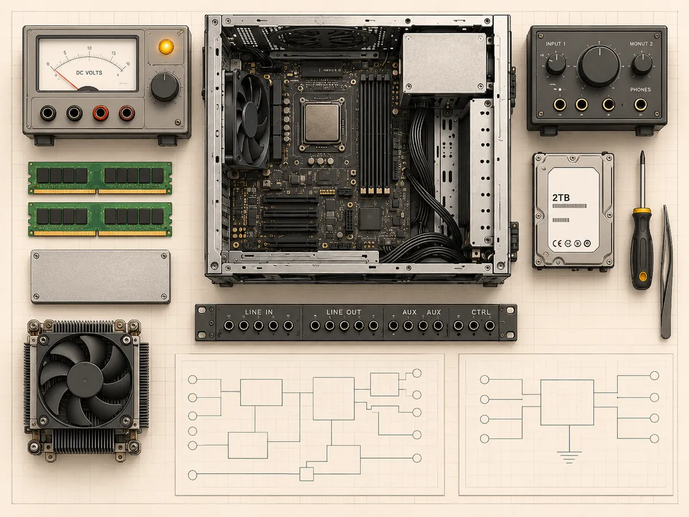

01
Systems engineering monograph / Compute workbench
Work through the Whybit stack: local AI hardware, systems and audio tools, foundational texts, then the episode breakdown that ties them together.
#ad As an Amazon Associate I earn from qualifying purchases.
Open the Systems Desk
Start here



Episode breakdown index
No records match this view.
This page sets no cookies and runs no analytics. The outbound Amazon links may set their own cookies, which Amazon controls. Nothing is tracked on this page.
Original editorial artwork only. Product links are affiliate search links, not scraped product pages. Prices can change on the store site.